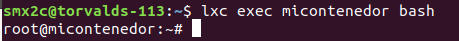

File Browser es un administrador de archivos que permite a los usuarios buscar archivos y gestionarlos. Permite guardar, ejecutar, copiar/pegar, buscar y borrar archivos, entre otras cosas permite descomprimir/comprimir archivos o administrar sus permisos.
Primero se debe crear un contenedor con lxc, para eso hay que poner el comando,
lxc launch SISTEMA_OPERATIVO:VERSION NOMBRE_DEL_CONTENEDOR
lxc launch ubuntu:18.04 micontenedor
Despues ejecuta tu contenedor:
lxc exec micontenedor bash
Si al ejecutar el anterior comando te sale el siguiente mensaje:
Prueba a poner este para iniciar el contenedor:
lxc start micontenedor bash
Una vez usado este comando debería funcionar con normalidad y aparecer de la siguiente manera:

Instalamos Filebrowser con el programa de "curl" (client URL) poniendo el comando "curl" (opciones deseadas, la URL. Poniendo el comando curl seguido de la URL del programa deseado, en este caso Filebrowser. Eprocedemos a instalar el programa deseado. Si se le añade el pipe al final de la línea de comando se instalará sin mostrar la información de la descarga.):
curl -fsSL https://filebrowser.xyz/get.sh | bash

filebrowser config set -a 192.168.10.141
El comando filebrowser config set -a 192.168.10.141 sirve para hacer que el host sea una ip especificada.
Sign up: false
Create User Dir: false
Auth method: json
Shell:
Branding:
Name:
Files override:
Disable external links: false
Server:
Log: stdout
Port: 8080
Base URL:
Root: /home/ubuntu
Socket:
Address: 127.0.0.1
TLS Cert:
TLS Key:
Defaults:
Scope: .
Locale: en
View mode: mosaic
Commands:
Sorting:
By:
Asc: false
Permissions:
Admin: false
Execute: true
Create: true
Rename: true
Modify: true
Delete: true
Share: true
Download: true
Auther configuration (raw):
{
"recaptcha": null
}Creas una cuenta de Filebrowser, Donde micontenedor es el nombre de usuario y 12345 es la contraseña
filebrowser users add micontenedor 12345

Ejecutas el siguiente paso para que el servidor esté activo y le añadimos el & para poder seguir haciendo mas cosas:
Explicar que debe crear una carpeta donde se guardaran los ficheros y carpetas (que no sea /home/ubuntu )
filebrowser -r /home/ubuntu &

Una vez instalado el filebrowser, nos conectaremos a nuestro servidor filebrowser a través de un cliente en la misma red, para poder acceder tenemos que poner en el buscador nuestra IP seguido de el puerto que utiliza filebrowser (8080).